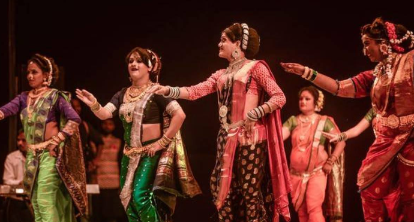
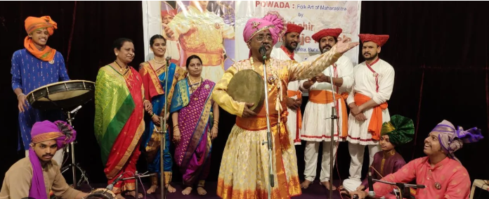
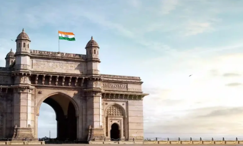
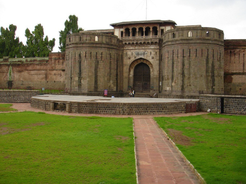
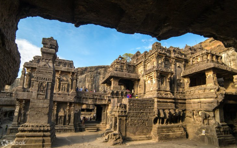

About Maharashtra
Maharashtra, the financial and cultural hub of India, is a land of diversity — from the fast-paced life of Mumbai
to the serene beauty of Konkan beaches and Sahyadri hills. The state is rich in art, music, theatre, and historical
monuments that reflect its glorious past.
Famous Tourist Places
- 🏰 Ajanta & Ellora Caves (Aurangabad)
- 🌊 Marine Drive (Mumbai)
- 🏯 Raigad Fort (Raigad)
- 🏞️ Lonavala & Khandala (Pune District)
- 🕌 Shaniwar Wada (Pune)
Traditional Dance & Culture


Historical & Heritage Photos



⬅ Back to Home